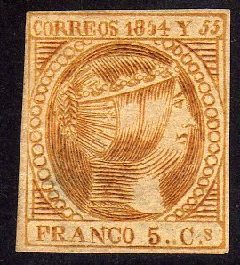
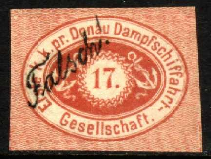
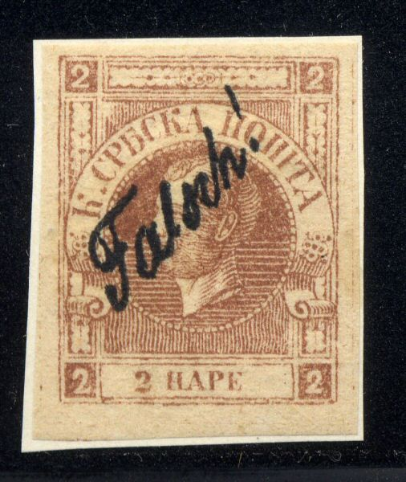
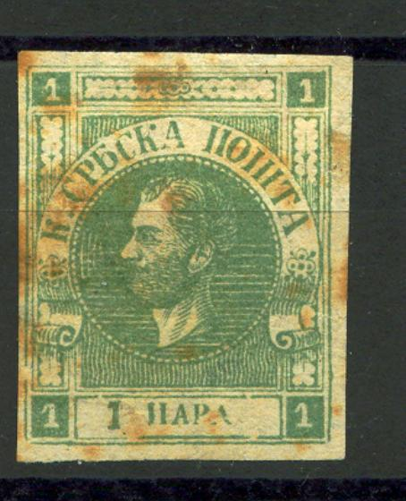

{kind=link}


Deceptive Fohl forgeries of the 5 c and 2 r stamps of the Philippines. The 2 r with top and bottom inscription inverted. The pearl below the 'Y' is not round but 'D'-shaped. The '5' of '1854' is too short at the top.
Note: on my website many of the
pictures can not be seen! They are of course present in the
catalogue:
contact me if you want to purchase the catalogue.
The forger Engelhardt Fohl of Dresden (Germany) made several deceiving forgeries. A large number was overprinted 'Falsch!'(meaning 'forged' in German) when they were discovered. They were subsequently distributed with some philatelic journals. Fohl ordered his forgery in the printing firm Leutsch. He seems to have becomes interested in stamps through his friend Alwin Nieske, a stamp forger himself (source 'Philatelic Forgers, thier Lives and Works' by V.E.Tyler).

Deceptive Fohl forgeries of the 5 c and 2 r stamps of the
Philippines. The 2 r with top and bottom inscription inverted.
The pearl below the 'Y' is not round but 'D'-shaped. The '5' of
'1854' is too short at the top.


Danube Steam Ship Company, Fohl forgeries with 'Falsch' overprint
after they had been discovered.
Fohl forgeries of Portugal:
(Front and backside of these forgeries)


A large quantity of these forgeries was discovered and distributed with stamp journals (see Cd 1 for more details), they were all overprinted 'Falsch' (= 'forged' in German). The 5 r Fohl forgery has the hair different and the '5' straight (not slanting as in the genuine stamps, source: http://www.tabacaria.org/Selos/DPedroV/Fohls5R.htm).
Fohl forgeries of Serbia:

(Fohl forgery, 74 pearls)
1) This forgery has 74 pearls in the circle and is made by Fohl. It has 15 white lines to the right of the head and 16 to the left. The eye is very curious. The 'P' of 'POMTA' has no bar across the top. The 'P' of 'PARA' also doesn't have a bar across the top. A large quantity of these forgeries was discovered and distributed with stamp journals (see Cd 1 for more details), they were all overprinted 'Falsch!' (= 'forged' in German).

(Second Fohl forgery)
2) This forgery has 80 pearls in the circle and is also made by the forger Fohl. It has 16 white lines to the right of the head and 17 to the left. As in the second forgery, the 'P' of 'POMTA' and the 'P' of 'PARA' don't have a bar across the top. A large quantity of these forgeries was discovered and distributed with stamp journals (see Cd 1 for more details), they were all overprinted 'Falsch!' (= 'forged' in German).
From The Stamp Collector's Magazine,Vol IX, 1871,
page 174:
A WORD WITH MR. ENGELHARDT FOHL.
We have not very much to say to this gentleman, but we must not
delay telling him—and at the same time our readers—what
little has to be said with respect to his rather oblique ideas
respecting honesty. In our September number appeared the
following advertisement:—
ENGELHARDT FOHL, DEUTSCHE BRLEFMARKENHANDLUNG,
RIESA, SAXONY.
For Sale. Italy 1851, 53, '54, set unused, 10/ ; used, 3/6.
Moldavia, 54, 81, 108, 80, 40, 5 paras, set 3/.
Mexico, 8 rls. violet, brown, green on brown, doz. 20/.
Spain 1851, '52, '53, the 2 reals 15/- each.
Luzon, 1854 y '55, 10/.
Oldenburg 1/3 gr. 1852, doz. 7/6 ; 1860, 1/3 gr., doz. 6/.
Naples, 1861, Sicily, Modena Government, Provisional. Parma
Government Provisional, Romagna, Rome, unused, 1/3 set of each.
Large stock of old Baden, Oldenburg, Hamburg, Bremen,
Mecklenburg, Lubeck, 4c, &c.
All Stamps genuine. Terms, Cash. Small remittances in Postage
Stamps. Correspondence desired. Colonial and Rare Stamps
exchanged.
It will be noticed that in this
announcement Mr. Fohl is careful to state that " all stamps
" are " genuine," and yet among those he offers
are some of the most dangerous forgeries ever brought on the
market, notably the set of Moldavian stamps for 3/-, and the 8
rls. Mexican. As they are forgeries, we do not hesitate to
denounce the original vendor to the public, and we trust that
this present warning will suffice.
Mr. Bonasi, a respectable dealer, was deceived by the Moldavian
counterfeits, and sent them to our publishers, by whom they were
sold to a very experienced philatelist, who took them to be
reprints. As soon, however, as Mr. Bonasi learnt that they were
forgeries, he wrote our publishers, informing them of the fact,
and requesting them to return the stamps, when he would reimburse
them the amount paid. Mr. Bonasi's conduct is as praiseworthy as
Mr. Fohl's way of acting is reprehensible, and we only wish all
our dealers were like him.
Besides the above-mentioned stamps, Mr. Fohl has issued an unused
27 para Moldavia, for which he only asks two pounds. As the
government stamps are all obliterated, collectors can be in no
doubt as to what they are buying.
Since writing, we have been informed that Mr. Fohl has
commissioned a house in Leipzig to fabricate these forgeries for
him.
{kind=link}
{kind=link}
{kind=link}